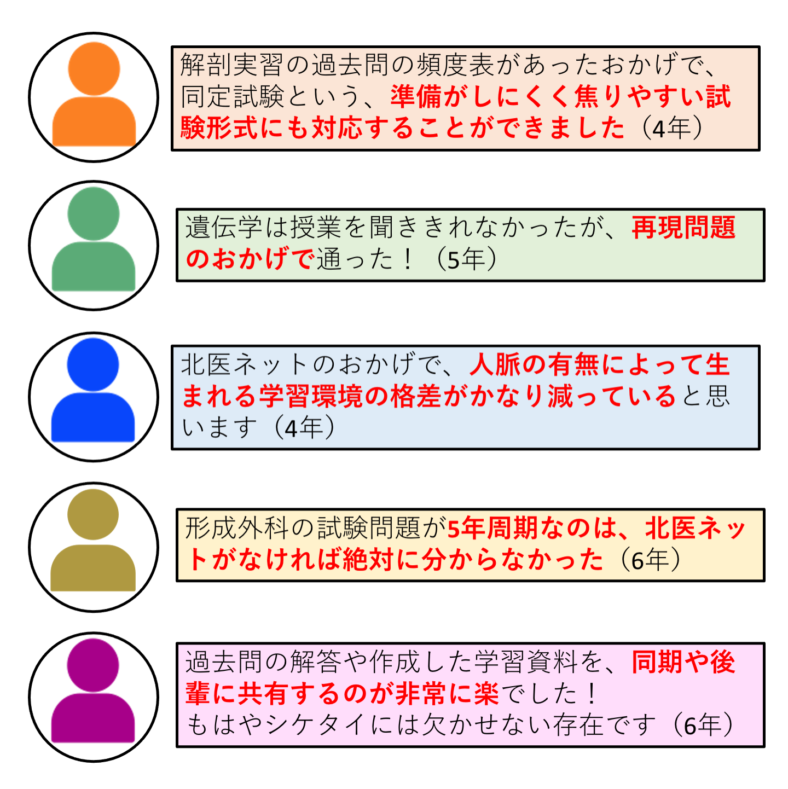
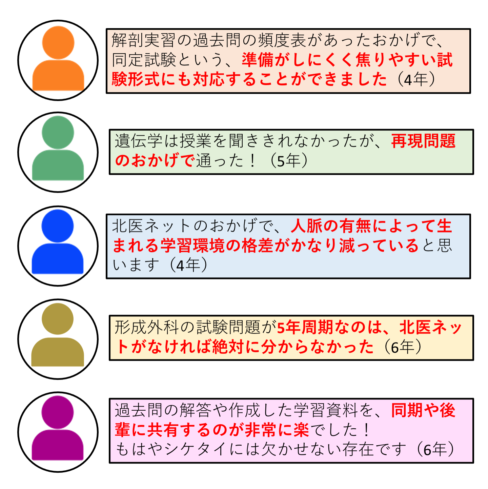

「北医ネット」管理会（最終更新：2021年5月8日）
「北医ネット」をご利用されてきた卒業生の皆様へ
本ページへご来訪いただきありがとうございます。
「北医ネット」は2012年から運用を開始して以来、北大医学部医学科の学生に過去問はじめ学習資料を提供してまいりました。
ですが、これらの活動は、先代の管理人の方々が多くの時間的・金銭的なコストを費やしてきたものでした。
特に、金銭的コストについては、
とある管理人の方が推定額10万円以上を立て替えたまま、返済することができず数年が経過してしまった
というのが現状です。
さて、この度2021年度より北医ネットは「hokui.net」から「hokumed.net」へ移設し、新体制にて運用を開始しました。そこで、今後の運営に関わりまして、以下の様に金銭的な体制の強化を図ることといたしました。
- 今後「北医ネット」を継続して運営するために、必要な諸経費を十分に確保する
- 先代サイトの運営のためにかかった費用の返済を並行して行う
つきましては、北医ネットをこれまで利用された卒業生の皆様に、活動維持のための募金へのご協力をお願いしております。
詳しい要項や募金方法につきましては、以下をご覧ください。
以下のような、北医ネットの必要性についての声を多数いただいております。
いかに
北医ネットが重要な存在かよくわかります...
義援金の使用用途
- サーバーレンタル費やドメイン取得費など、北医ネットのWebサービスの維持に必要な諸経費
- 前身のサイトであるhokui.netにおけるWebサービスの提供または維持管理に必要な諸経費のうち、先代管理人の方が立て替えた諸経費の返済
- 義援金の引き出し及び上記1./2.に要する手数料
- 確実にサイトの体制を整える上で、各学年の管理人に協力金として支払う謝礼
- そのほか、管理会の合議において、活動にあたって必要であると認められた支出
※上記は、「北海道大学『北医ネット管理会』金銭取扱い規則」に則って記載しています。
募金目標金額
今年度の目標金額：¥100,000
【内訳】
※上記寄付金の使用用途1.~5.を単に上記1.~5.と記す
- 上記1. : ¥10,000-
- 上記2. : ¥45,000- (余剰金は全てこちらに回ります。)
前身サイト運営に掛かった合計金額は、¥135,000 ( ¥15,000 /年 × 9年、2012年〜2020年） 3年程度での分割返済を予定（※注1）
- 上記3. : ¥16,000-
引き落とし手数料¥15,000程度（集金額の15%）＋ 振込手数料総計¥1,000程度
- 上記1.の未来2年分 : ¥20,000-
緊急的に金銭を要する活動を行う場合に、あるいは今後何らかの事情で突如募金活動が停止となった場合における当面の活動予備資金。
- 上記4. : 上記2.の支払いが完了した場合、余剰金はこちらに回ります（※注2）。
※注1：先代サイトを主に利用していた学年が卒業するまで残り3年程度であることを鑑みて、分割年数をこのように決定している。
※注2：「北海道大学『北医ネット管理会』金銭取扱い規則」にて、その他の上記に要する出費を優先した上で、余剰金が生じた場合にその一部から本件に関わる支出を行う旨を定めている。
募金方法
最短3分で終わります！
- 下の4つの募金フォームから、自分が募金したい金額を選択してください
- 「会員登録をしないで決済」を選択してください
- 必要事項を記入し、画面下部の「支払う」を押してください
- 支払い完了後、codoc運営より自動メールが送付されるので確認してください
以上で募金は完了です。ご協力ありがとうございました！
※募金には以下のいずれかのご利用が必要です。
クレジットカード（VISA, mastercard, AMERICAN EXPRESS, JCB, Diners Club, DISCOVER）, Apple Pay, Google Pay.
お忙しいところ最後までご覧いただき、誠にありがとうございました。

 
